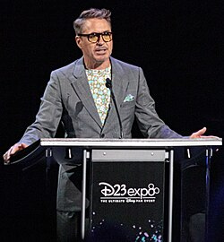
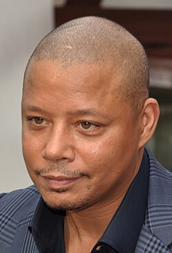
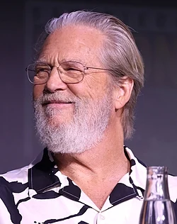
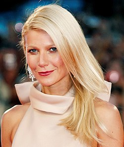

Актерский состав

Роберт Дауни — младший
Роль: Тони Старк / Железный человек
Дата рождения: 4 апреля 1965 года
Американский актёр, продюсер и музыкант. Обладатель премий «Оскар» (2024), «Золотой глобус» (2001, 2010, 2024), BAFTA (1993, 2024), Гильдии киноактёров США (2001, 2024), «Сатурн» (1994, 2009, 2014, 2019) и Выбор критиков (2024).

Терренс Ховард
Роль: Джеймс «Роуди» Роудс
Дата рождения: 11 марта 1969 года
Американский актёр и певец. Ховард начал свою карьеру в 1990-х на телевидении, прежде чем получить известность благодаря роли в романтической комедии «Шафер» (1999).

Джефф Бриджес
Роль: Обадайя Стейн
Дата рождения: 4 декабря 1949 года
Американский актёр кино, телевидения и озвучивания, кинопродюсер. Лауреат премий «Оскар» и «Золотой глобус» за лучшую мужскую роль в фильме «Сумасшедшее сердце».

Гвинет Пэлтроу
Роль: Вирджиния «Пеппер» Поттс
Дата рождения: 27 сентября 1972 года
Американская актриса кино и телевидения, предпринимательница, певица и писательница. Исполнила роль Пеппер Поттс в серии фильмов кинематографической вселенной Marvel. Обладательница премий «Оскар», «Золотой глобус» и «Эмми».